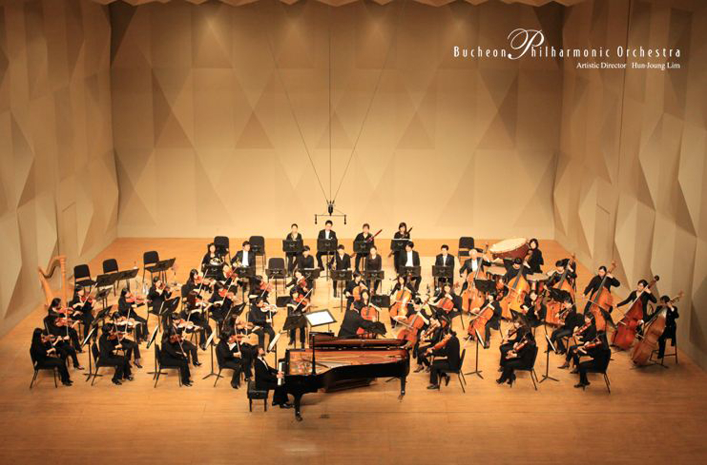
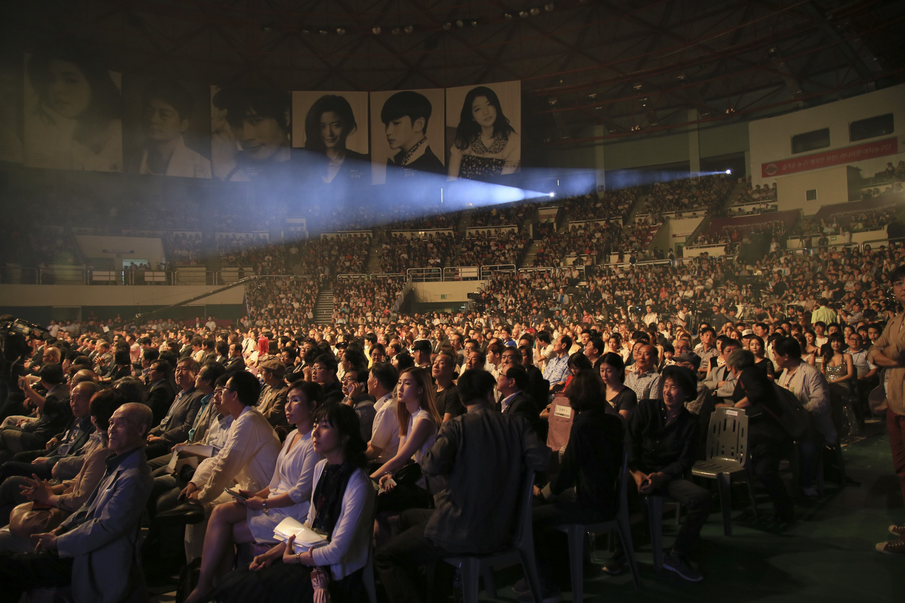
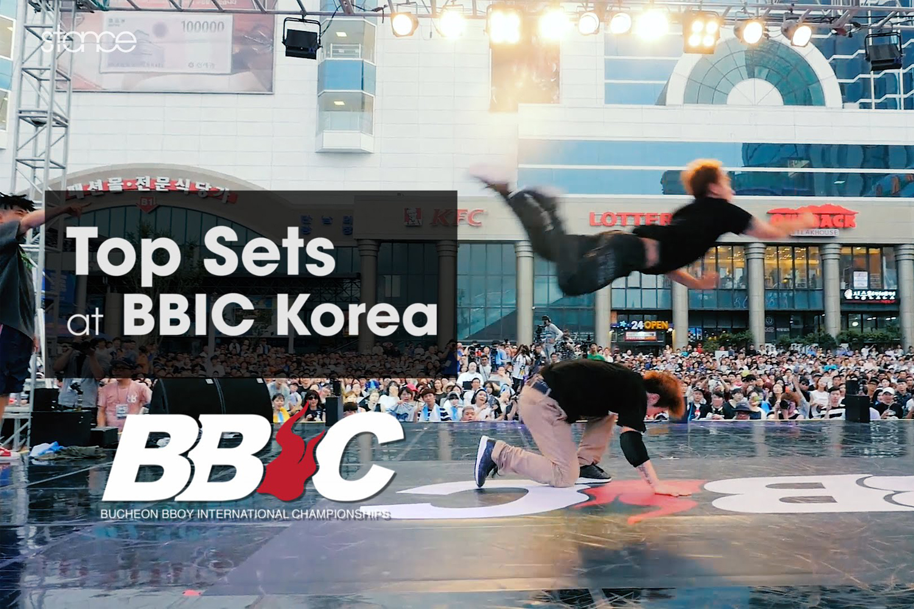

About My Hometown
Bucheon, Gyeonggi Province
Bucheon is a city in Gyeonggi Province, South Korea. This city is located between Seoul and Incheon.
Bucheon is the second most densely populated city after Seoul.
- Bucheon Philharmonic Orchestra
- Bucheon International Fantastic Film Festival
- Bucheon B-boy International Championship
Bucheon is the center of culture and the Bucheon Philharmonic Orchestra is located. Every July, there is an international film festival called Bucheon International Fantastic Film Festival (BiFan), and the Bucheon B-boy International Championship (BBIC) is also held.



In addition, there are various museums and convenient transportation. Bucheon's slogan is Fantasia Bucheon.